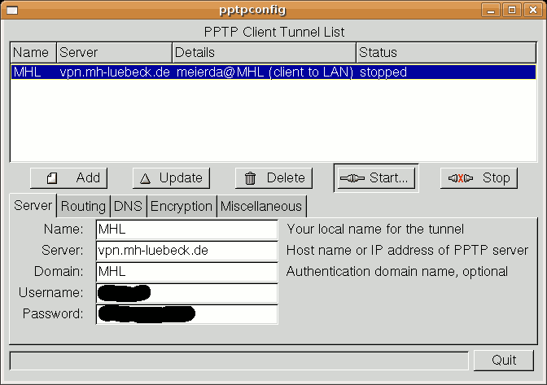
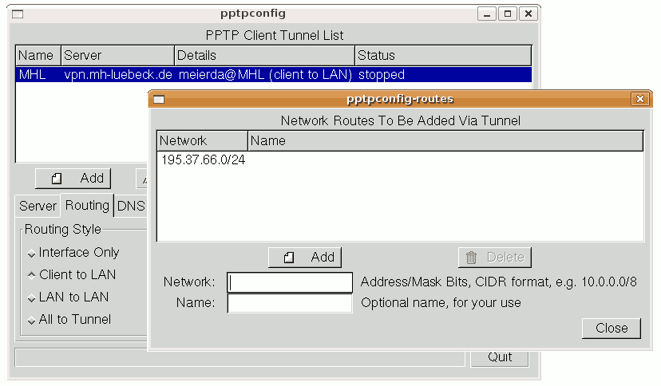
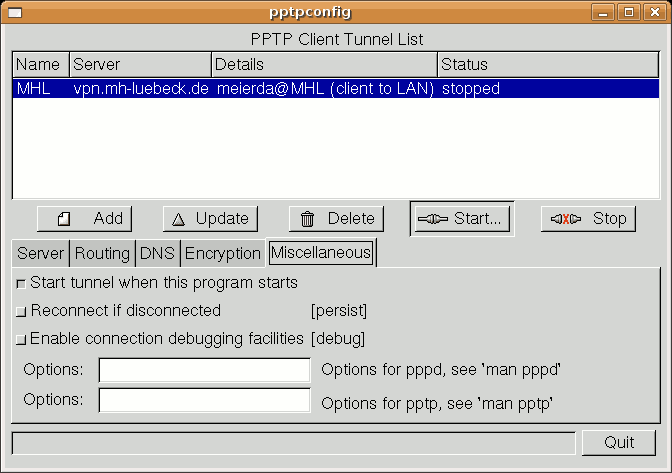

Wiki
Mitmachen
- Wikiartikel anlegen
- Howto anlegen
- Wiki-Referenz
- Wiki-Syntax
- Baustellen
- Artikelideen
- Ungetestete Artikel
- Ausbaufähige Artikel
- Fehlerhafte Artikel
- Rund ums Wiki
Konfiguration
- Backlinks anzeigen
- Exportieren
pptpconfig
Archivierte Anleitung
Dieser Artikel wurde archiviert, da er - oder Teile daraus - nur noch unter einer älteren Ubuntu-Version nutzbar ist. Diese Anleitung wird vom Wiki-Team weder auf Richtigkeit überprüft noch anderweitig gepflegt. Zusätzlich wurde der Artikel für weitere Änderungen gesperrt.
Hinweis:
Mit Ubuntu Feisty Fawn 7.04 wird er aufgrund der Network-Manager/VPN Plugins obsolet.
Zum Verständnis dieses Artikels sind folgende Seiten hilfreich:
pptpconfig ermöglicht die Konfiguration und Nutzung eines Zugangs zu einem VPN mit pptp. Zu weiteren Möglichkeiten der Einwahl siehe in diesem Artikel.
Installation¶
pptpconfig ist nicht in den Ubuntu-Quellen enthalten. Daher muss zur Installation die folgende Paketquelle [2] hinzugefügt werden:
deb http://quozl.linux.org.au/pptp/pptpconfig ./
Hinweis!
Zusätzliche Fremdquellen können das System gefährden.
Außerdem muss die Sektion universe aktiviert sein [2].
Dann kann das folgende Paket installiert [1] werden:
pptpconfig
Menüeintrag korrigieren¶
pptpconfig fügt dem Menü einen Eintrag unter "Sonstige" hinzu, dieser ist aber leider fehlerhaft. Zur Korrektur öffnet man mit einem Editor mit Root-Rechten [3] die Datei /usr/share/applications/pptpconfig.desktop und ändert die Zeile
Exec=pptpconfig
zu
Exec=gksudo pptpconfig
Für Kubuntu ist gksudo durch kdesudo bzw. kdesu zu ersetzen.
Einrichtung der Verbindung¶
Nach dem Start von pptpconfig müssen im ersten Reiter "Server" der VPN-Server, der Benutzername und das Passwort eingegeben werden. Im ersten Feld muss ein Name für die Verbindung vergeben werden. Unter Umständen muss auch ein Domänenname angegeben werden, dies geht aus den Zugansinformationen zum jeweiligen Netzwerk hervor.

Achtung!
Benutzername und Passwort werden unverschlüsselt in der Datei /etc/ppp/chap-secrets gespeichert. Im Betrieb ist diese Datei nur von Root lesbar. Wenn andere Personen aber physischen Zugang zum Rechner haben, könnten sie das Passwort mit einer Live-CD oder nach Ausbau der Festplatte leicht auslesen. Auch Mitbenutzer in der Admin-Gruppe können sich Zugriff verschaffen. Siehe hierzu Rechte und Lokale Sicherheit.
Im zweiten Reiter "Routing" klickt man nun auf "Edit Network Routes", gibt im Feld "Network" die Adresse des Zielnetzwerks an (ggfs. erfragen) und klickt auf "Add". Danach schließt man das Fenster mit "Close".

Soll die Einwahl bei jedem Start von pptpconfig automatisch geschehen, so aktiviert man im Reiter "Miscellaneous" noch "Start tunnel when this program starts". Zuletzt klickt man auf "Add", um die eben konfigurierte VPN-Verbindung zu speichern.

Hinweis:
Auf diese Weise können auch mehrere VPN-Verbindungen konfiguriert werden. Achtung: Zur Bearbeitung einer bereits eingerichteten Verbindung muss diese jeweils in der Liste gewählt werden. Dann nimmt man die gewünschten Änderungen vor und klickt zuletzt auf "Update".
Start der Verbindung¶
Wurde die Option "Start tunnel when this program starts" aktiviert, so erfolgt die Einwahl automatisch nach dem Start von pptpconfig. Ansonsten wählt man die gewünschte Verbindung aus der Liste und klickt auf "Start". Eine Internetverbindung muss zuvor bereits bestehen.
Nach dem Verbinden befinden sich auf der Arbeitsfläche zwei Fenster, die man minimieren sollte.
Beenden der Verbindung¶
Mit "Stop" beendet man die Verbindung. Im Konfigurationsfenster muss zuvor eventuell noch die zu beendende Verbindung aus der Liste gewählt werden.
Diese Revision wurde am 8. Juni 2011 19:58 von kaputtnik erstellt.
- Erstellt mit Inyoka
-
 2004 – 2017 ubuntuusers.de • Einige Rechte vorbehalten
2004 – 2017 ubuntuusers.de • Einige Rechte vorbehalten
Lizenz • Kontakt • Datenschutz • Impressum • Serverstatus -
Serverhousing gespendet von